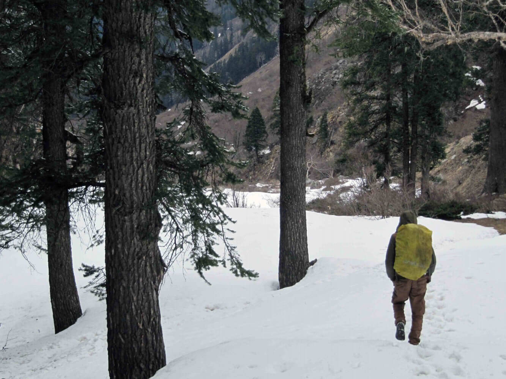

Described as God’s own country, Kerala is quite popular among travellers. It will render you speechless with its immersive cultural experience and the lush bounty of nature. If you are looking for a place to visit in india with family where you can kiss stress goodbye, here’s the place for you.
Best time to visit Munnar:
To vibe in with the tourists, the peak season is between September to March but if would like to experience the monsoon, June-August will be excellent
With a host of the most amazing treks in the entire world, Leh-Ladhak is truly one of the best places to visit in India before you die. Breathe in and let its enchanting monasteries, serene and absolute beauty and serene mountain ranges bring peace to you.
Best time to visit Leh-Ladhak:
The most preferred time to visit is between May and October since weather can get pretty rough here in winter.

Changu Lake and Nathula Pass are enough testaments to Sikkim’s glory that will sweep you off. Village hikes, sightseeing and the ethereal views of Mount Kanchenjunga just add to its beauty. Replete with enriching experiences and lush greenery, Sikkim serves as one of the places you have ever visited. If you plan well, this can be a place to visit in India within 10000 bucks.
Best time to visit Sikkim:
The most suitable times to visit Sikkim is between March-May or October-December.